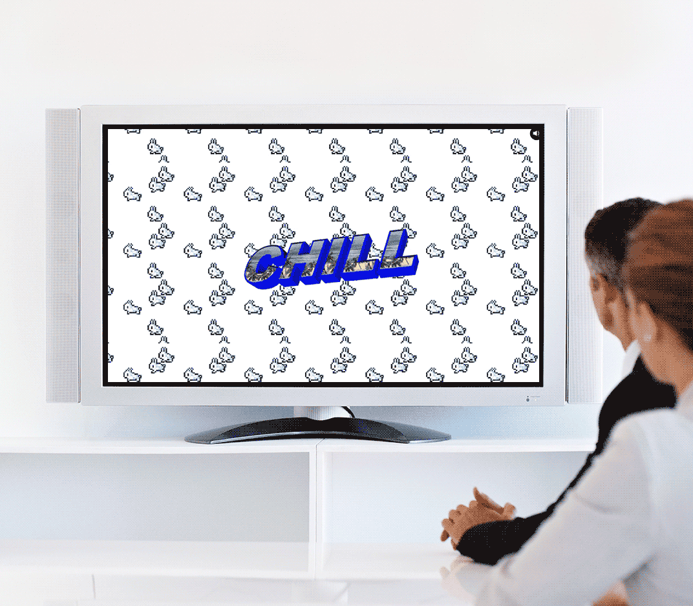
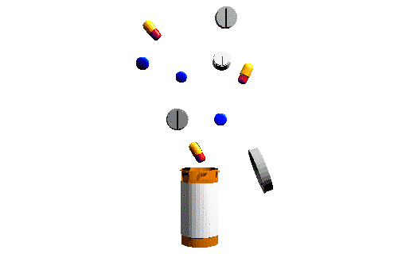
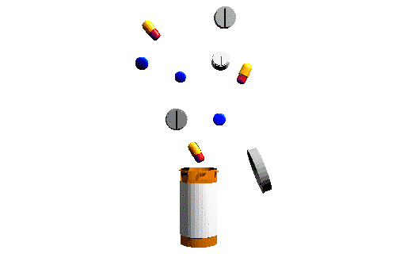

The site uses two separate random arrays that generate animated compositions on two opposing planes, a fixed foreground element, and a repeated background element. A new random composition is generated every four seconds. When paired with audio, the application explores the possibility of an autonomous robot as a video director.
We used real-time analytics to supplement and subtract content as an additional layer of engagement with the audience.
During the holidays, a month after the launch, we released a #CACHEMONET screensaver. The saver continues to get downloaded to this day.

 
